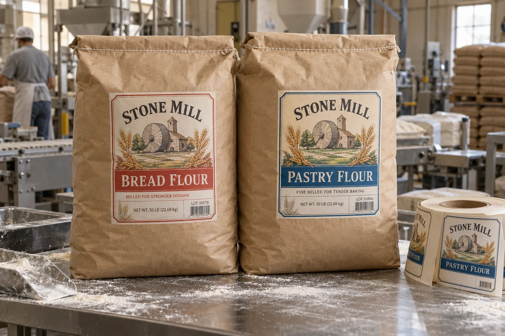

The sack changes shape after it is filled
A mill can measure an empty kraft bag and send me a neat rectangle. I still want to see it filled and closed. The front face bulges, the top folds and the stitching creates an uneven ridge. A label that crosses one of those transitions has to stretch or lift; increasing adhesive strength does not flatten the bag.
HERMA's label-specification guidance specifically asks about paper, rough or dusty surfaces and how the label is applied. Its dusty-sack example concerns a different industry, so I use it only for the general surface-contact problem, not as food-packaging approval.
Two flour varieties on one bag platform
Imagine a composite mill shipping bread flour and pastry flour in the same size paper sack. A shared bag can simplify inventory while full-color labels make the two recipes unmistakable. I would not rely on a narrow accent stripe alone: the product name, lot and weight field should remain legible when sacks are stacked and a worker sees only part of the front.
Now imagine a composite bakery supplier whose sacks are labeled right after filling. Fine flour settles on the front face. Instead of specifying an aggressive adhesive by reflex, I would first identify whether the label can be placed before the dustiest step, or whether the panel can be kept clean just before application. The trial has to reproduce the actual sequence.
Design the code for real handling
Reserve a flat area for the variable lot and date print and confirm the coding method on the chosen face stock. Check the finished label after sewing, stacking, pallet wrapping and ordinary warehouse movement. If the barcode will be scanned on the sack, test the packed shape and typical scan angle, not a loose label from the roll.
| Trial stage | Question |
|---|---|
| Empty sack | Where is the nominal print panel? |
| Filled sack | Which area remains reasonably flat? |
| Application | How much dust is on the bonding surface? |
| After stacking | Are edges, variety and lot still readable? |
| At dispatch | Can the required code be scanned? |
Our buying view
Fix the sequence before buying stickier stock
If a clean panel can be labeled consistently, I would solve that operating step first. A strong adhesive pushed onto flour dust may bond to the dust instead of the sack.
What to send with the order request
- Filled, closed sacks from each paper and bag supplier.
- Filling, dust-control, labeling and sewing sequence.
- Artwork and variable-field examples for every flour grade.
- Stacking, storage and barcode-scanning requirements.
Compare bakery paper-bag labels for a smaller retail format and lot-number planning for variable fields.
Frequently asked questions
Can a normal paper label stick to a flour sack?
It depends on the sack paper, surface dust, folds, adhesive and application pressure. Test on filled production sacks.
Where should the lot code go?
Reserve a flat, accessible field that remains readable after stacking and handling; validate the printer and ribbon or ink together.
Does a stronger adhesive solve a dusty surface?
Not necessarily. Removing or avoiding dust at the bonding point may matter more than choosing a stronger adhesive on paper.
Related buyer guides
Review your label specification
Send package photos, label dimensions, material details, quantity and application conditions. Include good and failed samples where possible so the discussion starts with evidence.